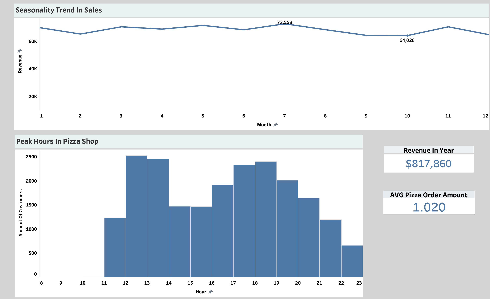
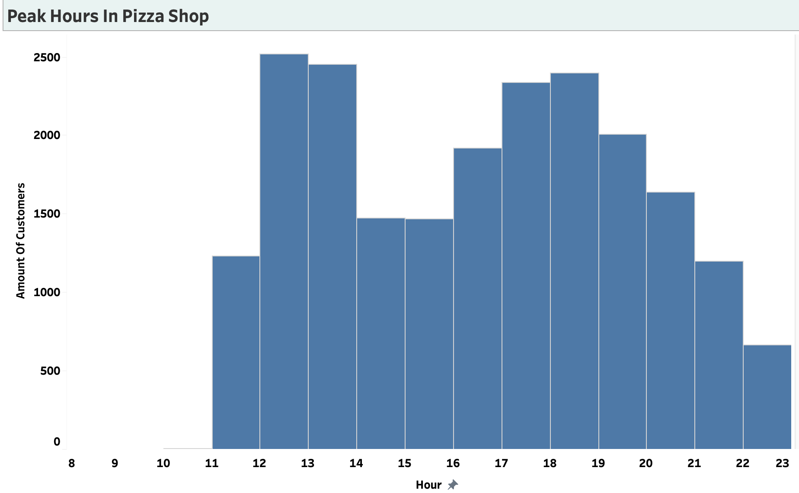
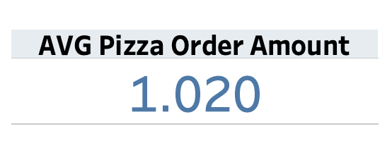
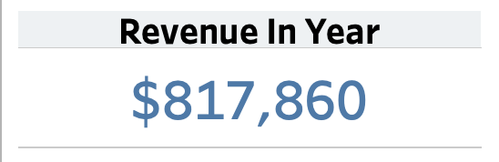
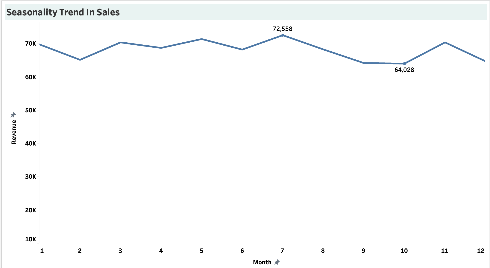

←
Pizza Place Sales Analysis
Presented by: Bladimir Nunez
Last Updated: April 12, 2024

Project Overview
In this project I am analyzing a year's worth of sales from a
fictitious pizza shop in 2015 that contains the date and time of each
order and the pizzas served, with additional details on the type,
size, quantity, price, and ingredients. Questions I will be answering
in this analysis are down below.
-
How many customers do we have each day? Are there any peak hours?
-
How many pizzas are typically in an order? Do we have any
bestsellers?
-
How much money did we make this year? Can we indentify any
seasonality in the sales?
-
Are there any pizzas we should take of the menu, or any promotions
we could leverage?
Visit GitHub Code!
Visit Tableau Dashboard!
Data Analysis (Data Visualization)
1. How many customers do we have each day? Are there any peak
hours?
In this table I have uploaded the CSV from my analysis and are able to
scroll to see how many customers our pizza shop has had everyday with
a majority of days having >50 customers.

I use a bar graph here to show our peak hours based on amount of
customers we had throughout the year We can see that at noon and 1Pm
we have our most business come in. The next greatest rush of traffic
would be at 5 and 6Pm. Before lunch time we have less then 10 people
come in at around 9-10Am.
2. How many pizzas are typically in an order?

On average we typically have one pizza in each order this year.
3. How much money did we make this year? Can we indentify any
seasonality in the sales?

For the year of 2015 the pizza shop made $817,860 dollars.

In July the shop made its most money for the month with $72,558 in
revenue. From August, September and October we see a decline in
monthly sales and by November we increase in revenue sales. Months of
January, July, March, May and November we see these are our popular
months for best sales.
4. Are there any pizzas we should take off the menu, or any
promotions we could leverage? Do we have any bestsellers?
Based off our scrollable table here we look at all our pizzas we offer
and the amount of revenue each brought in for the year. We see that
our top three bestsellers are the Thai chicken pizza, BBQ chicken
pizza and the California chicken pizza. Based off analysis I would not
take any pizzas off the menu even though the Brie Carre Pizza is our
least popular and only brought in $11,000 dollars in revenue. If we
take it off the menu that is $11,000 dollars off our yearly revenue.
From the line chart above we see that we have a decline in sales from
August, September and October. I would utilize that time period to
have deals with our best selling pizzas such as a buy one get one
free. I believe this would give us more sales throughout those months
to increase revenue. Based on our best times we sell I would want the
shop to promote these deals from 12-2Pm and 4-6Pm.
Insights/Recommendations
- The shop made $817,860 in 2015
- Our peak hours are from 12-1PM and 5-6PM
-
Month of July was our most profitable month while October is our
least
- I would recommend to keep all our pizzas on menu
-
I recommend to utilize a buy one get one free promo for the months
of August,September,October to increase sales using our top 3
bestselling pizzas
Data Sources
I obtained this data set from Maven Analytics that can be found here
under the food and beverage category.
Link to DataSet
Technologies Used
SQL: Data Cleaning and Analysis
Tableau: Data Visualization
Data Cleaning/Preprocessing
No cleaning of data was necessary due to it already being cleaned I
only had to transform some values in a column from one letter to full
words for better readability.